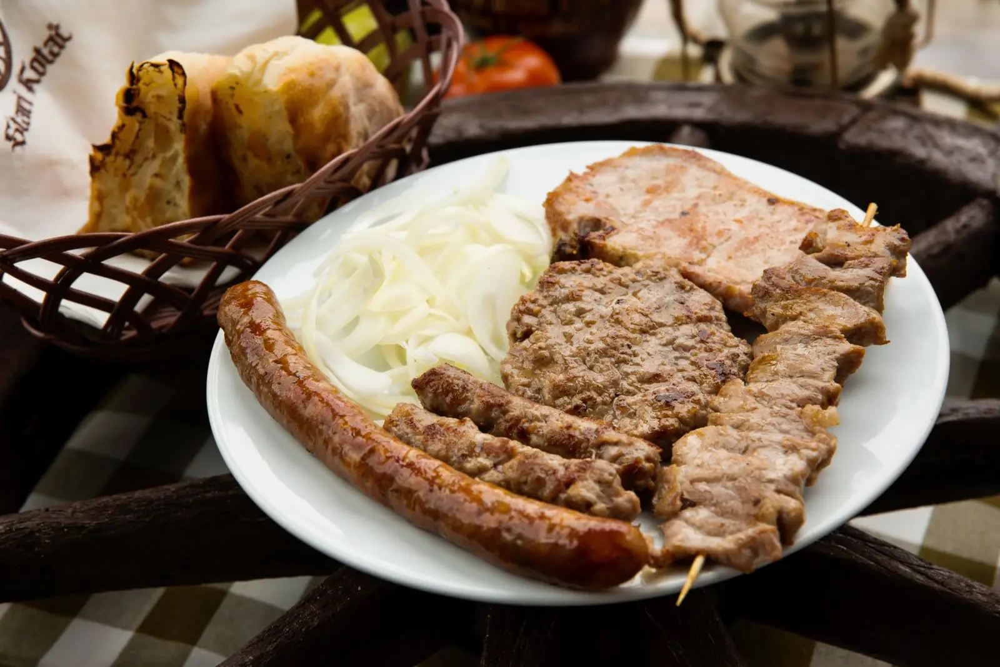
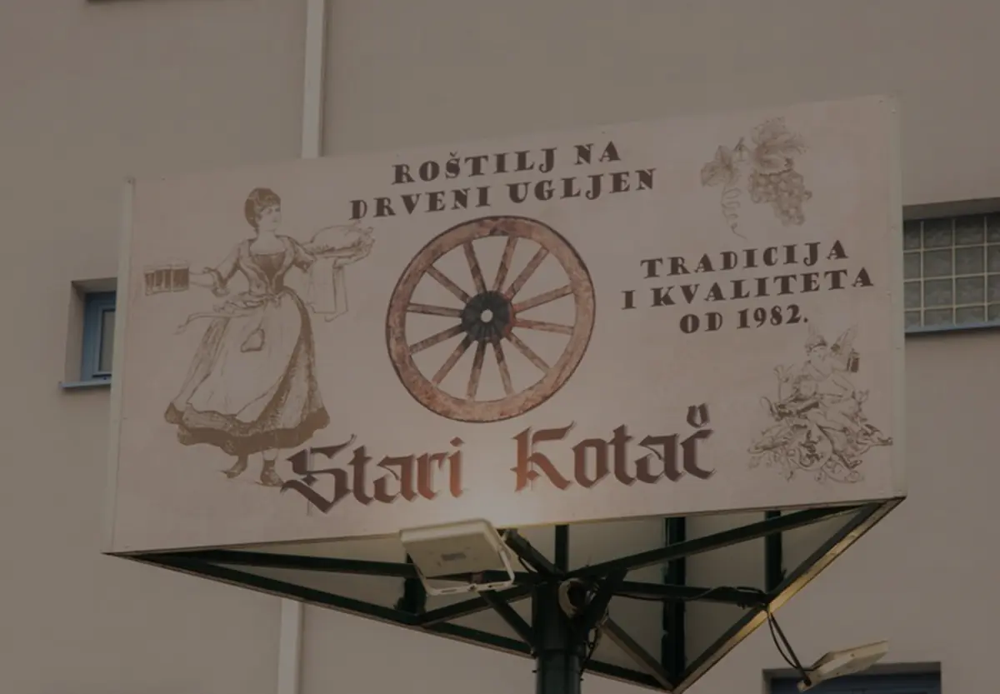
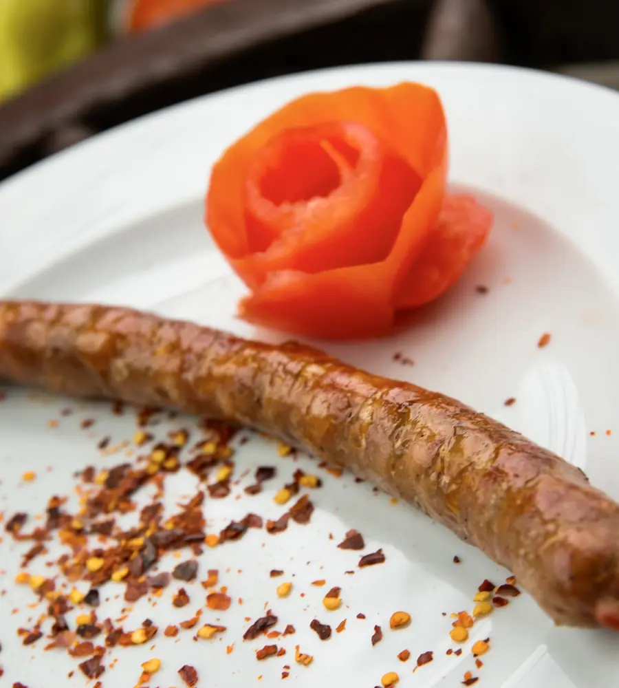
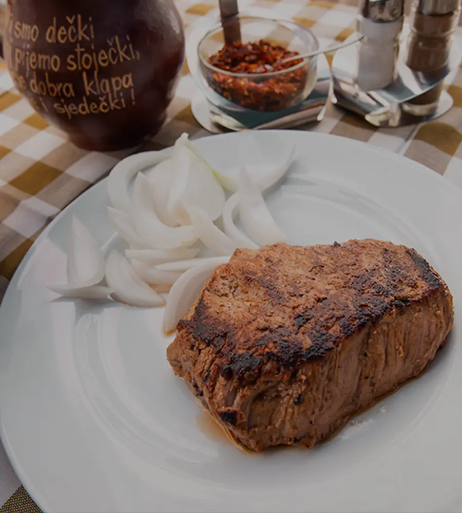
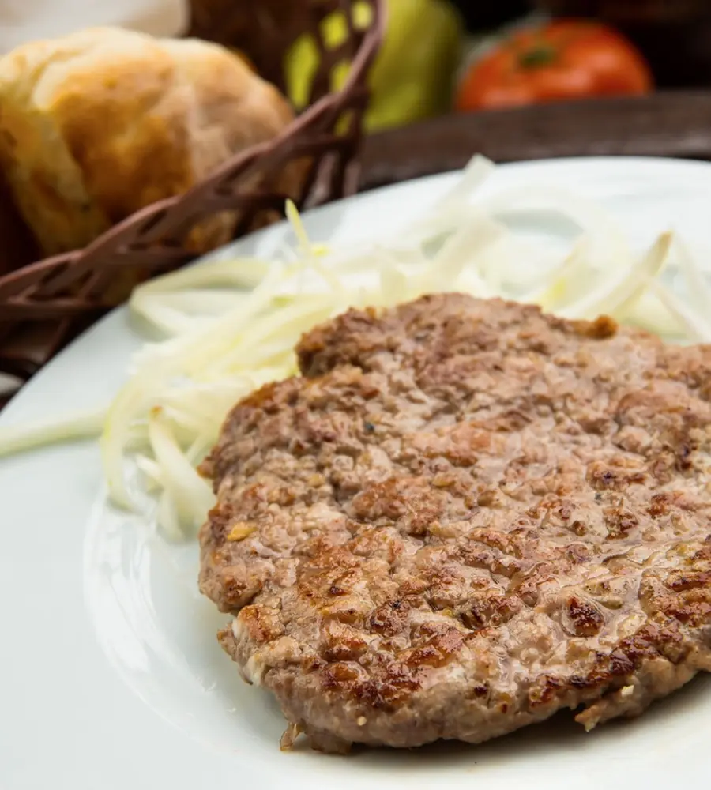
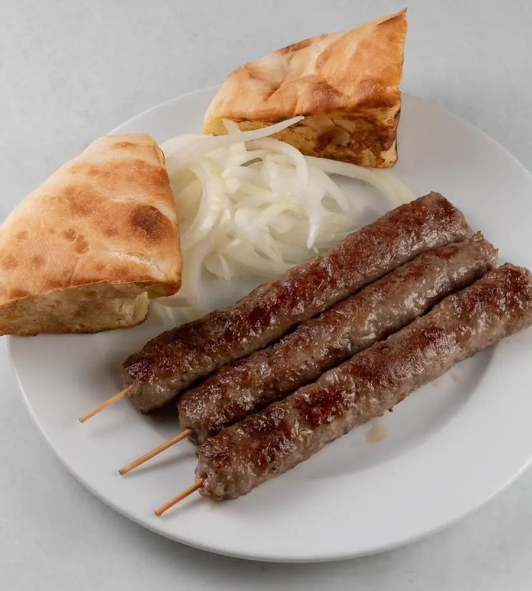

Svakodnevno svježe namirnice
Jedite najkvalitetnije
Okusi i mirisi tradicionalne kuhinje doživljaj su za „dušu i tijelo”, pogotovo kad je u pitanju kuhinja Starog Kotača.

Uto – Ned · 10:00 – 22:00
Dobrodošli u
Vrhunska kuhinja i vrhunska usluga. Čarolija na drvenom ugljenu od 1982.

Naša priča
Okusi i mirisi tradicionalne kuhinje doživljaj su za „dušu i tijelo”, pogotovo kad je u pitanju kuhinja Starog Kotača, koja predstavlja čaroliju na drvenom ugljenu već 44 godine.
Kao što već mnogi znaju, naši ražnjići, pljeskavice i ćevapi glavni su razlozi zbog kojih se poteže u Prečko iz svih dijelova po svoju porciju nostalgije.
Sigurni smo da miris našeg roštilja ne može dosegnuti sve krajeve svijeta, ali zato dobar glas može. Uvjerite se u spoj tradicije, kvalitete i jedinstvenog okusa!
Stari Kotač, s Vama od 1982. godine!
Pogledajte jelovnikGostoljubivost iz Starog Kotača podrazumijeva toplinu ognjišta, pravo na tišinu i ukusnu hranu, jer okusi se ne rađaju, nego stvaraju…
KsenijaGlavna kuharica
Zašto nas gosti odabiru
Jedite najkvalitetnije
Okusi i mirisi tradicionalne kuhinje doživljaj su za „dušu i tijelo”, pogotovo kad je u pitanju kuhinja Starog Kotača.
Kvaliteta na prvom mjestu
Pljeskavice, ražnjići i ćevapi glavni su razlozi zbog kojih se poteže u Prečko iz svih dijelova po svoju porciju nostalgije.
Hrana pripremljena s ljubavlju
Miris našeg roštilja možda ne može dosegnuti sve krajeve svijeta, ali zato dobar glas može! Hvala vam što ste s nama već 44 godine.
Preporuka glavne kuharice

komad
3,60 €
porcija
39,80 €
punjena sirevima, dimljenom junećom vratinom i paprikom
12,50 €
komad
4,05 €Proslave i okupljanja
Organiziramo ručkove, večere, rođendane, pričesti, krizme i razne druge prigode uz prethodni dogovor.
Dostava
Želite kušati gastronomiju Starog Kotača od kuće? Vršimo usluge dostave, a narudžbe primamo telefonom.
Usluga dostave naplaćuje se 1,5 €.
Galerija
Otvorite fotografiju za prikaz preko cijelog zaslona.
Spoj mladosti i iskustva
Glavna kuharica
Naša draga kuharica Ksenija s osmijehom na licu i dugogodišnjim iskustvom u gastronomiji ispunjava sve vaše želje za najsočniji roštilj!
Konobari
Uz tradicionalni i vrhunski roštilj svakodnevno vas očekuje naše nasmiješeno i ljubazno osoblje! Toplu dobrodošlicu žele Vam Ivanka i Toni.
Konobar
Gost uvijek odlazi s osmijehom jer ga ljubazno dočeka naše osoblje, pogotovo kad je u pitanju uvijek raspoloženi Krešo!
Što kažu o nama
Najbolji tradicionalni hrvatski roštilj u Zagrebu! Riječi nisu dovoljne da opišu koliko je ovaj roštilj izvrstan. Možete čak i odabrati pojedinačne komade mesa u bilo kojoj količini koja vam se sviđa! Sve pohvale Starom Kotaču!
Pljeskavica i ražnjići su daleko najbolji od svih koje sam probao do sada! Cijene i više nego dobre, ambijent nedavno preuređen i poseban, zaista sve pohvale. Nitko vas ne može nadmašiti!
Izvrsno mjesto za jelo. Stari Kotač je postao naše tradicionalno obiteljsko okupljalište, jer zaista nema boljih! Od hrane, cijene, osoblja… Sve preporuke!
Godinama već jedemo u Starom Kotaču i gdje god odemo drugo, shvatimo da je kod Vas ipak najbolje! Na sam spomen roštilja, Vi ste broj 1! Ako želite odličnu uslugu, hranu i jako pristupačnu cijenu s obzirom na kvalitetu, nećete pogriješiti!
Kontakt i rezervacije
Rezervirajte svoj stol u ugodnom i toplom ambijentu restorana Stari Kotač i provedite čarobno zagrebačko vrijeme sa svojim najbližima uz vrhunska jela i pića.
Uto – Ned · 10:00 – 22:00
Stari KotačPetrovaradinska 20, Prečko
Upute{kind=link}
{kind=link}
{kind=link}
{kind=link}
{kind=link}
{kind=link}
{kind=link}
{kind=link}
{kind=link}
{kind=link}
{kind=link}